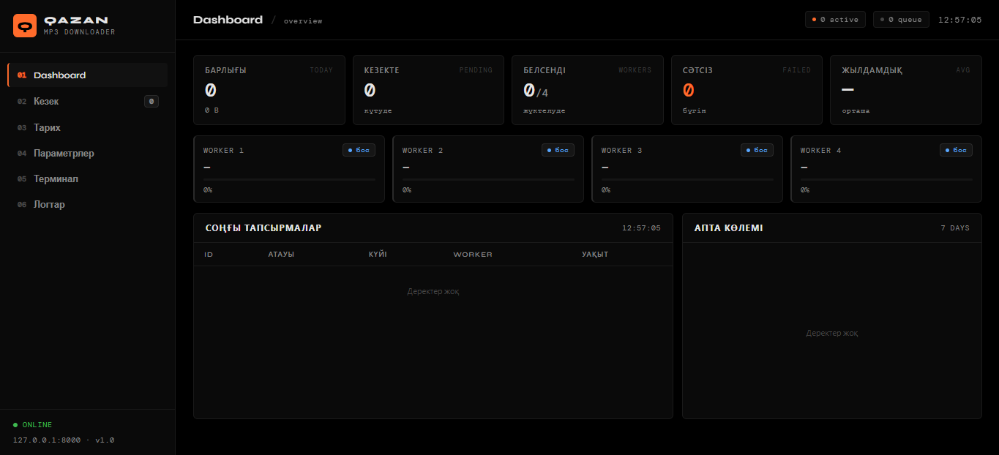
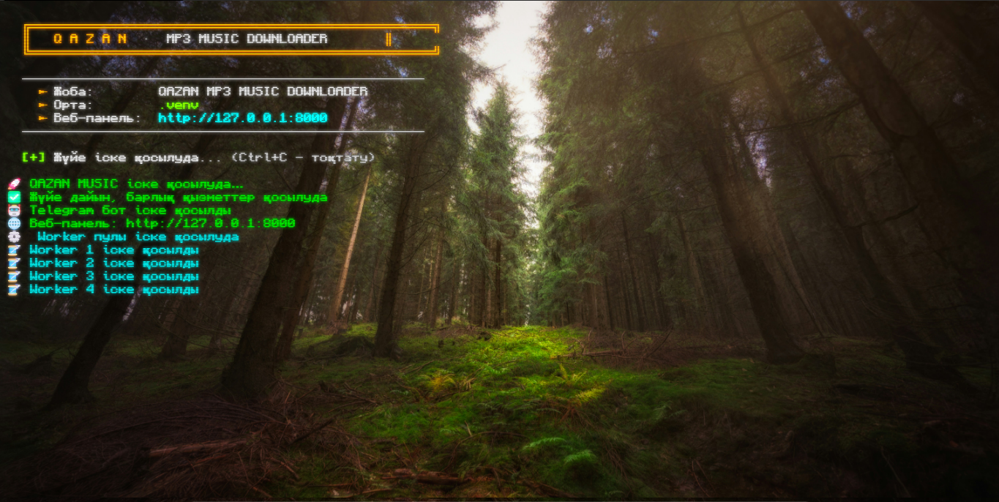

Batch URL Extraction
Any message can carry multiple YouTube, Shorts, or music.youtube.com links. Every unique URL is extracted, deduplicated, and queued in a single pass.
Fully automated Telegram bot + web dashboard that downloads YouTube audio as 128 kbps MP3, embeds custom cover art and artist metadata via ffmpeg, and manages everything in real time.
From Telegram intake to a tagged MP3 on disk — every stage is automated, observable, and crash-tolerant.
Any message can carry multiple YouTube, Shorts, or music.youtube.com links. Every unique URL is extracted, deduplicated, and queued in a single pass.
A link that exhausts all retries triggers an immediate standalone Telegram warning with a short error, so no failure passes silently.
An asyncio.Queue is drained by four independent coroutines, each running yt-dlp and ffmpeg off the event loop.
Downloads are pre-checked against the output directory and the tasks table. Duplicates are marked skipped, never re-fetched.
If cookies.txt sits next to main.py it is passed transparently to yt-dlp. If it is absent, the pipeline proceeds without authentication.
python main.py boots the Telegram bot, FastAPI server, and worker pool together through asyncio.gather — one process, one shutdown path.
ffmpeg maps art.png as Cover (Front) with id3v2_version 3, so every MP3 ships with your custom artwork.
Finished files are written as {title}-{artist}.mp3 into ~/Downloads/Music, sanitized for the host filesystem.
A local FastAPI dashboard streams worker state, queue depth, daily stats, and logs over WebSocket every second.
Dashboard, Queue, History, Settings, Terminal, and Logs — client-side routed with zero page reloads.
Queue, history, editable settings, and daily counters survive restarts in a single qazan.db file.
Interrupted downloading or processing tasks are reset to pending and re-enqueued automatically on boot.
The local dashboard and the colorized stdout stream — both fed by the same event loop.


Windows and Linux/macOS commands are provided where they differ. No build step, no containers, no cloud accounts.
| Requirement | Version | Notes |
|---|---|---|
Python | 3.11+ (3.12 recommended) | Verify with python --version. |
FFmpeg | any recent build | Must be resolvable on PATH. |
Deno | latest | Required by yt-dlp-ejs for YouTube JS challenges. |
Git | any | For cloning the repository. |
Fetch the project and move into its root directory.
git clone https://github.com/QarabaiErooom/QAZAN-MP3-MUSIC-DOWNLOADER.git
cd qazan-mp3-downloaderKeep the project dependencies isolated from the system Python.
python -m venv .venv
.venv\Scripts\activatepython3 -m venv .venv
source .venv/bin/activateUpgrade pip, then install the pinned requirements.
pip install --upgrade pip
pip install -r requirements.txtyt-dlp-ejs requires Deno at runtime. Install it once and let yt-dlp pick it up from PATH. Verify with deno --version.
irm https://deno.land/install.ps1 | iexcurl -fsSL https://deno.land/install.sh | shPlace a square PNG at the configured path. 500×500 or larger is recommended. If the file is missing, the pipeline still runs — you just get an MP3 without embedded art.
C:\Users\Erom\Downloads\QAZAN MUSIC\art.pngEdit the four values you actually need. Everything else — bitrate, worker count, artist, retries — is editable later from Dashboard → Settings.
BOT_TOKEN = "123456789:AAExampleTokenFromBotFather" # from @BotFather
ART_PATH = r"C:\Users\Erom\Downloads\QAZAN MUSIC\art.png"
OUTPUT_DIR = r"C:\Users\Erom\Downloads\Music"
COOKIES_PATH = "cookies.txt" # optionalOne command boots the Telegram bot, the FastAPI server, and the four-worker queue concurrently. On Windows you can also double-click start.bat.
python main.pyThe dashboard becomes available at http://127.0.0.1:8000 immediately. The server binds only to localhost.
The Telegram bot is the intake; the browser dashboard is the observability layer. Nothing else is required.
/start to the bot. You will receive the intro message in Kazakh.Open http://127.0.0.1:8000 in any modern browser. The server binds only to 127.0.0.1 — it is not reachable from the network and does not require authentication.
| Page | What it shows |
|---|---|
| Dashboard | Stat cards (Total, In Queue, Active Workers, Failed Today, Avg Speed), a live worker strip with progress bars, the 10 most recent tasks, and a 7-day bar chart. |
| Queue | Every pending, downloading, or processing task with its assigned worker, attempt count, and creation time. |
| History | Completed, failed, and skipped tasks, filterable by status. |
| Settings | Every DEFAULT_SETTINGS entry, editable inline with a confirmation modal before the value is written to SQLite. |
| Terminal | A live monospaced stream of the last 120 human-readable Kazakh log lines, color-coded by status. |
| Logs | The last 200 lines of system.log, parsed into timestamp / level / module / message, and colored by severity. |
All values are seeded into the SQLite settings table on first run and can be edited live from Dashboard → Settings. Workers reload dynamically without a restart.
| Key | Type | Default | Description |
|---|---|---|---|
bitrate | string | 128k | MP3 bitrate passed to FFmpegExtractAudio. |
format | string | mp3 | Preferred audio codec. |
worker_count | int | 4 | Number of persistent worker coroutines. |
max_concurrent | int | 4 | Upper bound of simultaneously running downloads. |
artist | string | Qarabai Ermahan | Artist tag written into every MP3. |
art_path | string | C:\Users\Erom\Downloads\QAZAN MUSIC\art.png | Cover art embedded via ffmpeg. |
embed_cover | bool | true | Toggle cover embedding. |
output_dir | string | C:\Users\Erom\Downloads\Music | Destination directory for finished files. |
filename_format | string | {title}-{artist}.mp3 | Filename template using {title} and {artist}. |
skip_existing | bool | true | Skip URLs whose target file already exists. |
max_retries | int | 3 | Retry attempts per URL before marking failed. |
retry_delay_sec | int | 5 | Delay in seconds between retries. |
progress_messages | bool | true | Send the initial queue acknowledgement message. |
send_full_stats | bool | true | Send the final per-batch summary. |
per_file_notification | bool | false | Send a message per finished file (opt-in). |
log_level | string | INFO | Threshold for system.log. |
db_path | string | qazan.db | SQLite database file location. |
auto_cleanup_days | int | 30 | Purge completed rows older than this at boot. |
COOKIES_PATH (cookies.txt) is intentionally not a database setting — its presence is checked against the filesystem at runtime, so you can drop it in or remove it without touching the app.
Telegram intake feeds an asyncio queue. Workers run yt-dlp and ffmpeg, persist state to SQLite, and FastAPI streams a snapshot to the browser every second.
Solid arrows show the download path. Dashed arrows show state reads and writes.
main.pySingle entry point. Boots logging, initializes the database, restores interrupted tasks, then runs asyncio.gather(bot, web, workers) so all subsystems share one event loop and one shutdown path.
config.pyHolds every constant (BOT_TOKEN, paths, DEFAULT_SETTINGS), configures the file logger targeting system.log, and exposes human() for colorized Kazakh console lines plus the in-memory log ring buffer.
db.pyThin aiosqlite layer with three tables: tasks, settings, stats_daily. Provides enqueue_task, update_task_status, get_queue, get_history, get_dashboard_stats, cleanup_old_tasks, and value casting on read.
downloader.pyThe heart of the pipeline. Defines the WorkerPool supervisor, four persistent worker coroutines, yt-dlp and ffmpeg wrappers, the retry loop, and the Notifier bridge used by the Telegram module for per-URL failure alerts.
telegram_bot.pyaiogram 3 dispatcher. Handles /start and any text message, extracts and deduplicates URLs, enqueues each as a DB row plus queue item, aggregates the chat's pending task IDs, and sends the final summary only once all of them reach a terminal state.
web.pyFastAPI application with a single HTML route, REST endpoints for settings, queue, history, and logs, and the /ws WebSocket that pushes a full dashboard snapshot every second. Bound to 127.0.0.1 only.
templates/ · static/Vanilla SPA. No build step; the six views toggle via CSS classes, the WebSocket reconnects automatically, and settings changes route through a confirmation modal before hitting POST /api/settings.
No frontend framework, no cloud services, no build step — just Python, ffmpeg, and a browser.
| Technology | Role |
|---|---|
| Async orchestration via asyncio.gather. | |
| Telegram dispatcher, filters, message handlers. | |
| REST endpoints and WebSocket surface. | |
| ASGI server. | |
| YouTube extraction and format selection. | |
| Solves YouTube signature challenges. | |
| JavaScript runtime backing yt-dlp-ejs. | |
| MP3 encoding, cover and metadata embedding. | |
| Queue, history, settings, and daily stats. | |
| Async SQLite driver. | |
| Vanilla SPA dashboard, no build step. |
Built on the shoulders of aiogram, FastAPI, Uvicorn, yt-dlp, yt-dlp-ejs, FFmpeg, Deno, SQLite, and aiosqlite. Header badges and the typing animation are powered by Shields.io and readme-typing-svg.
The module layout is intentional. Do not fold logic across boundaries — each file owns a single responsibility.
qazan-mp3-downloader/
├── main.py # Single entry point: asyncio.gather(bot, web, workers)
├── config.py # Constants, paths, DEFAULT_SETTINGS, logging + human() helper
├── db.py # aiosqlite layer: tasks, settings, stats_daily
├── downloader.py # yt-dlp + ffmpeg pipeline, 4 async workers, retry logic
├── telegram_bot.py # aiogram 3 handlers, URL extraction, batch stats
├── web.py # FastAPI app, REST endpoints, /ws WebSocket
├── requirements.txt # Python dependencies
├── start.bat # Windows one-click launcher
├── cookies.txt # (optional) YouTube authentication cookies
├── art.png # (user-provided) cover art embedded in every MP3
├── system.log # (runtime) INFO+ log file
├── qazan.db # (runtime) SQLite database
├── templates/
│ └── index.html # Single-page app shell
├── static/
│ ├── style.css # Dark Minimalist Developer Dashboard styles
│ └── app.js # WebSocket client + SPA view logic
└── screenshots/
├── website.png # Dashboard screenshot
└── terminal.png # Terminal screenshotA single bad URL never stops a worker, never stops the queue, and never stops the process.
Open an issue first for anything that changes behaviour. Keep the module boundaries from the architecture section, match the existing async style, and update the README alongside any change to settings or the dashboard. By submitting a pull request you agree your contribution is licensed under OSL-3.0.
Open an IssueLicensed under the Open Software License 3.0. The full text is available in the repository.
Copyright (c) 2026 Qarabai Ermahan
Any derivative work must retain the original copyright notice and a prominent Attribution Notice indicating that modifications were made, as required by OSL-3.0 Section 6.
Read the LICENSE